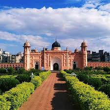
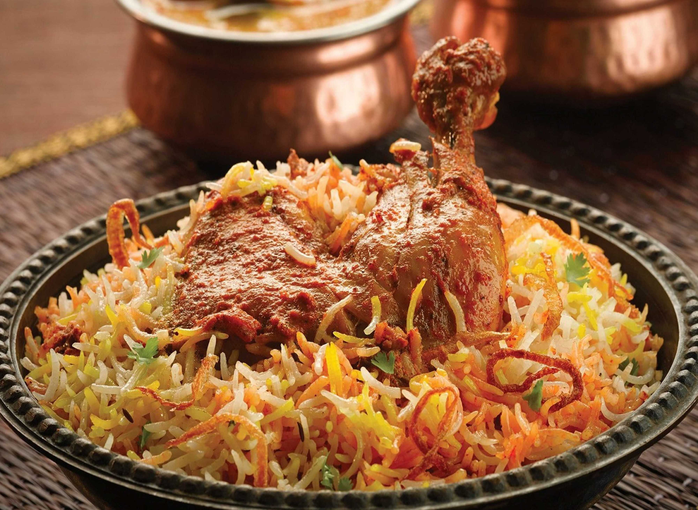

|
|
Dhaka is the heart of Bangladesh. Known as the city of mosques and muslin,
it is a mega city with a rich Mughal history and a vibrant modern culture.
|
| About Dhaka |
Image |
Brief Description |
| Historical Place |

|
Lalbagh Fort: A 17th-century Mughal fortress. It includes the tomb of
Pari Bibi and a beautiful mosque.
|
| Famous Food |

|
Kacchi Biryani: The legendary dish of Old Dhaka, slow-cooked with
marinated mutton and fragrant rice.
|
| Visiting Place |

|
Ahsan Manzil: The Pink Palace, formerly the official seat of the
Nawab of Dhaka, located on the Buriganga river.
|